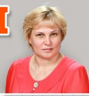
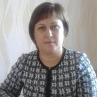

Муниципальное бюджетное общеобразовательное учреждение "Средняя школа № 3 имени А.Н. Першиной" г. Енисейска Красноярского края
|
Меню сайта
Категории раздела
Полезные ссылки на официальные порталы!
Статистика
Онлайн всего: 1 Гостей: 1 Пользователей: 0 |
Руоводство. Педагогический (научно-педагогический) составДиректор - Тараторкина Светлана ВикторовнаОбразование - высшее педагогическое.
Лесосибирский ГПИ,факультет филологический, 1998 г. Квалификация:учитель русского языка и литературы
Cтаж работы в данном учреждении – 18 лет, в должности "директор" - 7 лет; Квалификационная категория: по должности "директор" -соответствие занимаемой должности по должности учитель - высшая категория тел.: 8(39 195) 2 23 06; 89135234986 e-mail: mousosh_102@mail.ru; s_vtaratorkina@mail.ru Стародубцева Ирина Викторовна, заместитель директора по УР Образование - высшее педагогическое. Лесосибирский ГПИ,факультет филологический, 2001 г.Квалификация:учитель русского языка и литературы
Cтаж работы в данном учреждении- 6; Квалификационная категория: первая по должности "заместитель директора" -соответствие занимаемой должности тел.: 8(39 195) 2 44 27 e-mail: mousosh_102@mail.ru i_v_starodubzeva@mail.ru Образование - высшее педагогическое. Лесосибирский педагог.институт, 1997 г. Квалификация: учитель начальных классов Cтаж работы в данном учреждении –8 лет (общий 23года); Квалификационная категория:по должности "заместитель директора" -соответствие занимаемой должности по должности учитель - высшая категория тел.: 8(39 195) 2 23 06 tabaskova@yandex.ru Томашевская Маргарита Андреевна, заместитель директора по ВР, учитель иностранного языка Образование - высшее СФУ, г.Лесосибирск2018 г. Квалификация: Cтаж работы в данном учреждении – 1 год квалификационная категория - тел.: 8(39 195) 2 23 06 megan.thoms@yandex.ru Ермохина Юлия Александровна, педагог-психолог Образование - высшее СФУ, г.Красноярск 2009 г. Квалификация: психолог Cтаж работы в данном учреждении – 1 год квалификационная категория - соответствие тел.: 8(39 195) 2 23 06 ermoxina.yu@yandex.ru Шайдурова Ольга Олеговна, учитель физической культуры Образование - высшее, средне-специальное СФУ, 2012 г., Енисейский педагогический колледж, 2006г. Квалификация: учитель начальных классов, педагог дополнительного образования Cтаж работы в данном учреждении –6 лет Квалификационная категория - первая Жичинская Ольга Владимировна, учитель истории и обществознания Образование - высшее педагогическое. Лесосибирский ГПИ, 1996 г. Квалификация: учитель начальных классов Енисейское педагогическое училище, 2006г. Квалификация: учитель истории и обществознания Cтаж работы в данном учреждении – 21 год; Квалификационная категория: по должности учитель - высшая категория тел.: 8(39 195) 2 44 27 e-mail: mousosh_102@mail.ru
Попова Светлана Викторовна, учитель биологии Образование - высшее педагогическое. КГПУ им В.П.Астафьева, 2008 г. Квалификация: учитель биологии Специальность: биология Cтаж работы в данном учреждении – 19 лет; Квалификационная категория: по должности "заместитель директора" -соответствие занимаемой должности по должности учитель - высшая категория тел.: 8(39 195) 2 23 06 e-mail: svpopova_2011@mail.ru Лукьянцева Любовь Владимировна, учитель начальных классов Образование - высшее педагогическое. Лесосибирский педагог.институт, 1984 г. Квалификация: учитель начальных классов Cтаж работы в данном учреждении – 18 лет (общий 37г); Квалификационная категория: по должности учитель - высшая категория тел.: 8(39 195) 2 23 06 Llv-enis@rambler.ru Мордвинова Тамара Александровна, учитель начальных классов Образование - высшее педагогическое. Лесосибирский педагог.институт, 1984 г. Квалификация: учитель начальных классов Cтаж работы – 34 года; Квалификационная категория: по должности учитель - тел.: 8(39 195) 2 23 06 mousosh_102@mail.ru Заставская Оксана Викторовна, учитель начальных классов Образование - высшее педагогическое. Енисейское педагогическое училище, 2000 г. Квалификация: учитель начальных классов Cтаж работы в данном учреждении – 0 лет Квалификационная категория: по должности учитель - тел.: 8(39 195) 2 23 06 Мулюкина Светлана Ильинична, учитель начальных классов Образование - высшее педагогическое. Лесосибирский педагог.институт, 1995 г. Квалификация: учитель начальных классов Cтаж работы в данном учреждении – 12 лет (общий стаж 32 года) Квалификационная категория: по должности учитель -первая тел.: 8(39 195) 2 23 06 mulyukina1968@mail.ru Иванова Людмила Николаевна, учитель математики Образование - высшее педагогическое. Лесосибирский педагог.институт, 1985 г. Квалификация: учитель начальных классов Cтаж работы в данном учреждении –10 лет (общий - 42 года) Квалификационная категория: по должности учитель - первая тел.: 8(39 195) 2 23 06 iriv_93@mail.ru Емельченко Тамара Ивановна, учитель начальных классов Образование - высшее педагогическое. Иркутский педагог.институт, 1982 г. Квалификация: учитель начальных классов Cтаж работы в данном учреждении – 9 лет (общий - 41) Квалификационная категория: по должности учитель - первая категория тел.: 8(39 195) 2 23 06 tamara.work_2014@bk.ru Ермолаева Екатерина Владимировна, учитель начальных классов Образование - средне-профессиональное. КГБПОУ "Енисейский педагогический колледж"2021 г. Квалификация: учитель начальных классов Cтаж работы в данном учреждении –0 лет (общий 0); Квалификационная категория: по должности учитель - тел.: 8(39 195) 2 23 06 mousosh_102@mail.ru Давыдова Анастасия Александровна, учитель начальных классов Образование - средне-профессиональное. Енисейский педагог.колледж 2016 г. Квалификация: учитель начальных классов Cтаж работы в данном учреждении – 5 лет Квалификационная категория: по должности учитель - первая категория Морозова Елена Викторовна, учитель ИЗО и черчения Образование - высшее педагогическое. Лесосибирский педагог.институт, 1990 г. Квалификация: учитель ИЗО и черчения Cтаж работы в данном учреждении – 2 года (общий - 20) Квалификационная категория: по должности учитель - тел.: 8(39 195) 2 23 06 mousosh_102@mail.ru Дрозд Светлана Петровна, учитель физики и математики Образование - высшее педагогическое. Лесосибирский педагог.институт, 1984 г. Квалификация: учитель физики и математики Cтаж работы в данном учреждении – 37 лет Квалификационная категория: по должности учитель - высшая категория тел.: 8(39 195) 2 23 06 drozdSP@yandex.ru Соболева Валентина Ивановна, Образование - высшее педагогическое. Новосибирский педагог.институт, 1972 г. Квалификация: учитель математики Cтаж работы в данном учреждении – 12 лет (общий 48) Квалификационная категория: по должности учитель - первая категория тел.: 8(39 195) 2 23 06 Хохлова Марина Геннадьевна, учитель русского языка и литературы Образование - высшее педагогическое. Лесосибирский педагог.институт, 1988 г. Квалификация: учитель русского языка и литературы Cтаж работы в данном учреждении – 34 года Квалификационная категория: по должности учитель - высшая категория тел.: 8(39 195) 2 23 06 hohlova1967@list.ru
Образование - высшее педагогическое. Лесосибирский педагог.институт, 1996 г. Квалификация: учитель русского языка и литературы Cтаж работы в данном учреждении – 26 года Квалификационная категория: по должности учитель - первая категория тел.: 8(39 195) 2 23 06 lavrenteva-n-v@mail.ru Ловчикова Анастасия Анатольевна, учитель иностранного языка Образование - средне-профессиональное г.Лесосибирск, 2006 г. Квалификация: учитель иностранного языка Cтаж работы в данном учреждении –4 года Квалификационная категория: по должности учитель - соответствие тел.: 8(39 195) 2 23 06 c2p104@mail.ru Зыкова Ангелина Владимировна, учитель иностранного языка Образование - высшее ФГБОУ ВО "Красноярский государственный пед.университет им.В.П.Астафьева, 2019 г. Квалификация: бакалавр, педагогическое образование; профиль -учитель иностранного языка Cтаж работы в данном учреждении – 2 года, молодой специалист тел.: 8(39 195) 2 23 06 linalina.1980@mail.ru Карпузович Оксана Михайловна, педагог-библиотекарь Образование - высшее, 2002год Квалификация: учитель начальных классов Cтаж работы в данном учреждении – 2 года тел.: 8(39 195) 2 23 06 oksana.karpuzovich74@bk.ru Килина Валентина Михайловна, учитель истории и обществознания Образование - высшее педагогическое. Красноярский гос. универ. им. В.П. Астафьева, 2012 г. Квалификация: учитель русского языка и литературы Cтаж работы в данном учреждении – 14 лет Квалификационная категория: по должности учитель - первая категория тел.: 8(39 195) 2 23 06 kilina.valentina.87@mail.ru Колобов Игорь Анатольевич, учитель информатики, ОБЖ Образование - высшее. Забайкальский гос.пед.университет им.Чернышевского 1994 г. Квалификация: учитель Cтаж работы в данном учреждении – 5 лет (общий 19 лет) Квалификационная категория: по должности учитель - "соответствие занимаемой должности" тел.: 8(39 195) 2 23 06 тел.: 8(39 195) 2 23 06 1971igor71@mail.ru Горбань Дарья Алексеевна, учитель физической культуры Образование - высшее. СФУ Лесосибирск 2011 г. Квалификация: учитель Cтаж работы в данном учреждении – 2 года Квалификационная категория: по должности учитель - соответствие тел.: 8(39 195) 2 23 06 g_d_88_88@mail.ru Максимова Анна Константиновна, учитель физической культуры Образование - средне-специальное. ЕПК, 2019г. Квалификация: педагог ДО Cтаж работы в данном учреждении – 2 года молодой специалист Квалификационная категория: по должности учитель - тел.: 8(39 195) 2 23 06 mousosh_102@mail.ru Фрольченко Максим Артемович, учитель физической культуры Образование - средне-специальное КГБПОУ "Енисейский педагогический колледж" 2021 г. Квалификация: педагог дополнительного образования Cтаж работы в данном учреждении – 0, молодой специалист Квалификационная категория: по должности учитель - тел.: 8(39 195) 2 23 06 Колесникова Анна Валерьевна, педагог-организатор Образование - средне-специальное КГБПОУ "Енисейский педагогический колледж" 2021 г. Квалификация: педагог дополнительного образования Cтаж работы в данном учреждении – 0, молодой специалист Квалификационная категория: по должности учитель - тел.: 8(39 195) 2 23 06 Новолоцкая Наталья Валерьевна, социальный педагог Образование - средне-специальное ГОУВПО "Красноярский государственный педагогический университет им.В.П.Астафьева" 2006 г. Квалификация: учитель биологии Cтаж работы в данном учреждении – 0 Квалификационная категория: по должности учитель - тел.: 8(39 195) 2 23 06 Гридасова Марина Дмитриевна, учитель английского языка Образование - высшее. ФГБОУ ВО "Воронежский государственный университет" г.Воронеж 2020 г. Квалификация: бакалавр Cтаж работы в данном учреждении – 0, молодой специалист Квалификационная категория: по должности учитель - тел.: 8(39 195) 2 23 06 |
Данные школы
Муниципальное бюджетное общеобразовательное учреждение
"Средняя школа № 3 имени А.Н. Першиной"
г.Енисейска Красноярского края
ОГРН 1022401273498
ИНН 2447004263
КПП 2440701001
г. Енисейск, ул. Ленина, 102 Навигатор ДО
Вакансии учителей в общеобразовательных организациях Красноярского края по состоянию на 20 августа 2017 года по данным муниципальных образований края 76-летие Победы
«Большая перемена»
400 лет енисейску
Гос услуги
Социальные видеоролики
Поиск
Музей - онлайн
Год памяти и славы
Друзья сайта
|
|
 Баскова Татьяна Александровна, заместитель директора по УМР,
Баскова Татьяна Александровна, заместитель директора по УМР,